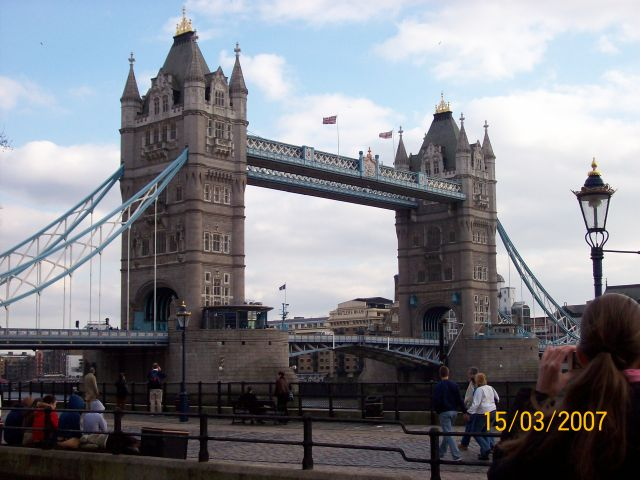

My
stay in London
The
structure of our week in London was like this:
from
Monday to Friday we went to school from 9:30 to 13:00. When the
school
finished we had a short time for eating and then we went
sightseeing
with our teachers until about 17:00. After that we went home for
dinner and about 20:15 we
went
out until 22:30. On Saturday we went sightseeing in the
morning
and in the afternoon we were free. On Sunday we visited Tower
Bridge
in the morning and in the afternoon we came back home in Bologna.
The
name of our school was “Swandean school” and it was
situated in Wimbledon.
It was a school for foreigners. Our class name was “Keynes
Group”
and we were in room 9.
Our
teacher’s name was Kathy and she was 34 years old. She was quite
tall
and
slim with long straight blond hair and blue eyes. Her boyfriend’s
name
was
Sunny.
He was Indian and he
worked in Wales. Kathy hadn’t got any pets
but
her favourite animal was the cat. Her favourite food was fish and
chips
while she didn’t like to eat rice. She told us something about
her
experiences like when she went to Australia and she swam with
dolphins.
She told us that she had been to 30 countries. Her lessons were
very
pleasant and in a week we learnt a lot of things. One of my favourite
part
of the lesson was the pronunciation: one day we repeated the
alphabet
and another day we trained about the pronunciation of the h. On the
last
day we watched the film “Dodge ball” with the subtitles in
English. I
liked
it a lot, even if I didn’t understand all the words. I felt very
well
about the teacher, the lessons and the school and in my opinion it
was one
of
the most interesting experiences that we did.
Swandean School
On
the 1st day we visited Trafalgar Square and the National Gallery.
After
that
we went to St. James’s Park and to Buckingham Palace. This is one
my
favourite
monuments but I felt upset because we didn’t see the changing of
the
guard, which is in the morning.
On
Monday we went for a walk in Wimbledon and after that we visited the
Museum
of London. I
didn’t like it very much because, in my opinion, itwasn’t
very interesting. On Tuesday we visited the Natural History Museum
and
the Science Museum. I liked the 1st museum a lot, while I didn’t
like the
2nd
museum.
The Natural History Museum
On
Wednesday we went to the Royal Observatory and the Maritime Museum.
We
also
went to the Queen’s House and the Cutty Sark but they were closed.
On
Thursday we visited the Tower of London and I liked it so and so.
On
Friday we visited The Globe and the Clink Prison Museum. In my
opinion
this
was the worst museum that we visited. On Saturday morning we visited
the
British Museum and I liked it a lot. Afterwards we went to Covent
Garden
and there, there were a lot of interesting shops. In the afternoon
we
saw the Big Ben, Westminster Hall and Whitehall. On the last day we
visited
Tower Bridge and I liked it a lot.
Tower Bridge

My
host family was composed of a mother and her son. The lady’s name
was
Lucia
Genevie while her son’s name was Ashanti. Lucia was born in
Yorkshire
and she had lived there for 2 years. She was 42 years old and
she
was short and slim with long brown curly hair and dark brown eyes.
She
was
a very nice and generous person. She worked as a project
officer
and used to work near Tower Bridge. In her free-time she liked
reading,
cooking, going to the theatre and to restaurants. She had been to
Italy
and she had visited Ravenna, Rimini, Bologna and Florenz. Ashanti
was
sixteen years old and he went to boarding school in Surrey. I
didn’t
see him a
lot
because he came back home only at week-ends. I felt very well with my
host
family even if the house was very small.
The landlady of me and Michela
The
weather in London was always sunny except on the last day which
becamevery
windy and rainy at about midday.
One
of the things of London that I didn’t like very much were the
prices:
for
example I paid 9 pounds (13.50 euros)for one pizza
“Margherita”!!
another thing
that
I didn’t like very much was the food. Fortunately in front of the
school
there was a shop called “Panetteria Italiana” where there
was
also
Italian
food. In the evening our landlady cooked quite well but the
sandwiches
that she prepared for me and Michela weren’t very good.
However
I’m very happy about our experience in London and in the future
I
want to have a similar one!
Monica
Della Pietra 3AE